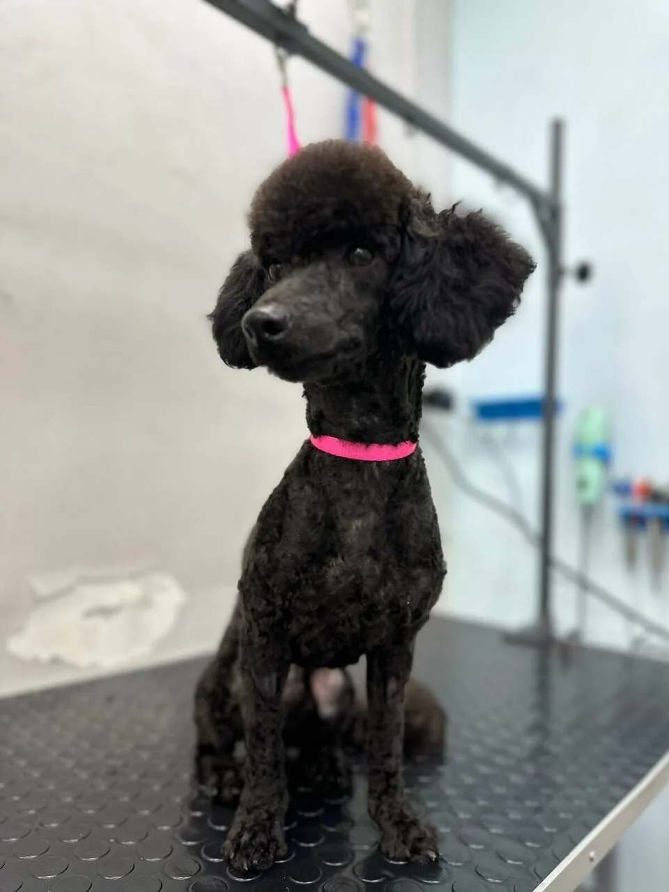
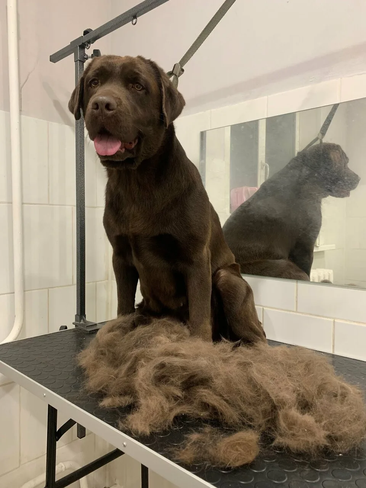
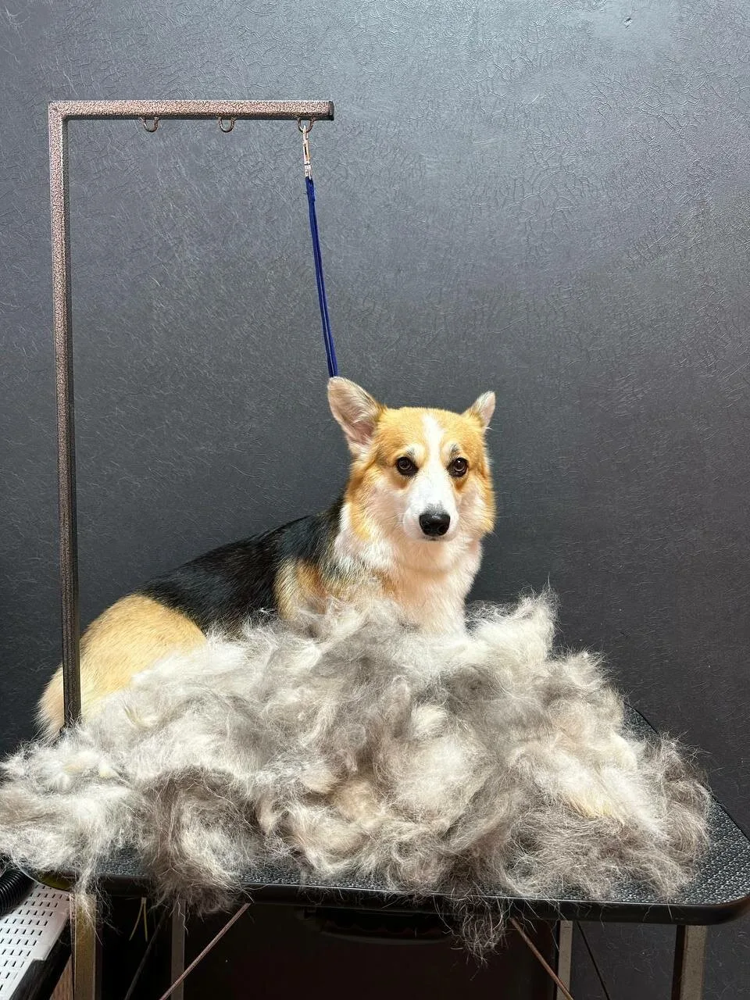
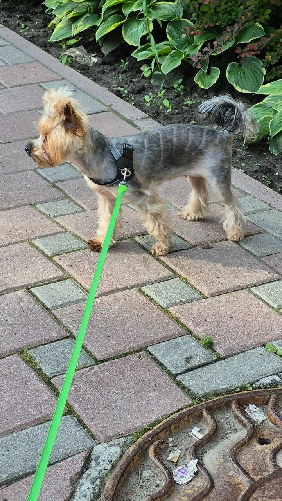
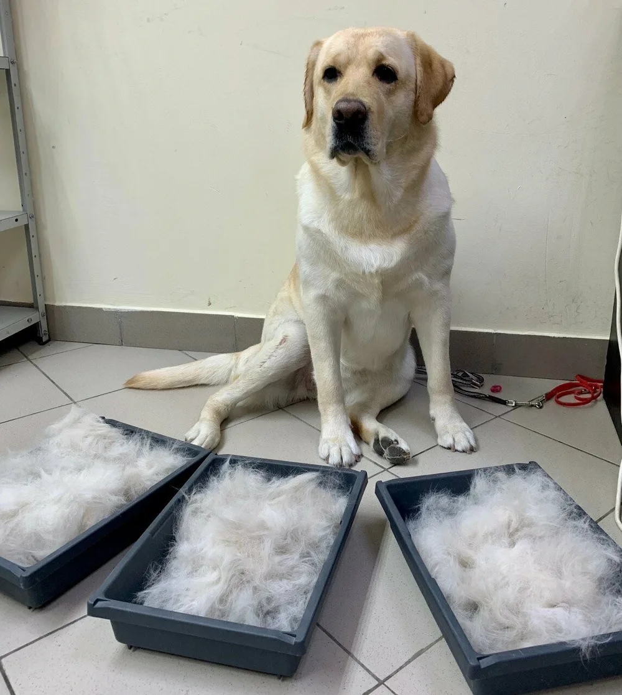
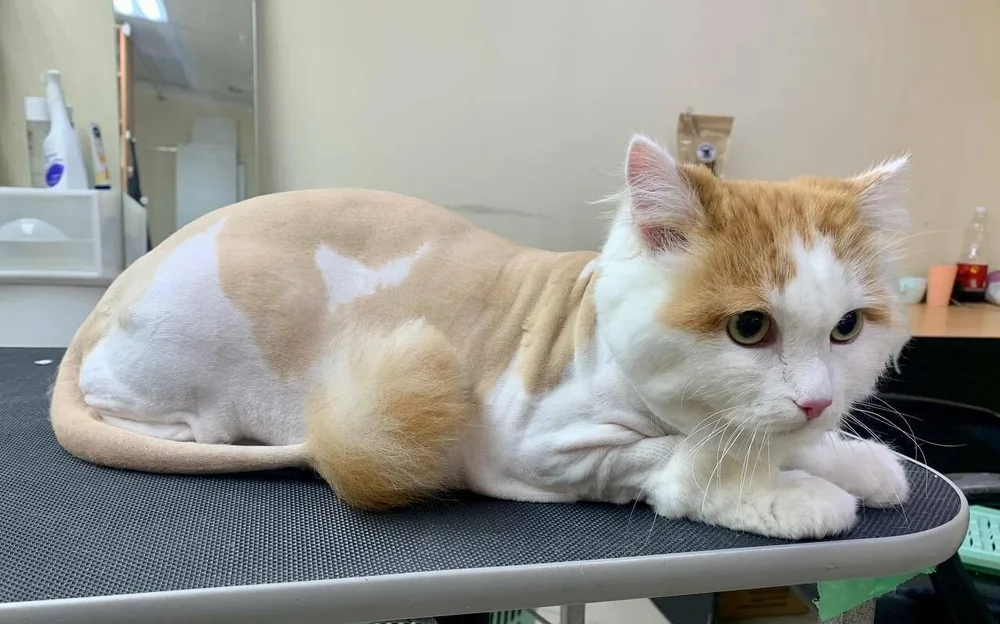

Груминг-студия Барни · Тюмень
Груминг собак и кошек в Тюмени
Стрижка, вычесывание и уход на 30 лет Победы, 92. Выберите процедуру и напишите мастеру.
- Комплексы для собак разных пород
- Вычесывание и уход за кошками

Услуги и цены
Прайс с Яндекс.Карт, проверен 23 ноября 2026. Актуальную сумму и состав ухода подтвердит мастер.
Собаки 62
- Гигиенический комплекс для пуделя2 200 ₽
- Комплекс со стрижкой для Той пуделя до 28см (рост в холке)2 600 ₽
- Комплекс со стрижкой для карликового пуделя от 28 до 35 см (рост в холке)2 800 ₽
- Комплекс со стрижкой для мальтипу до 28 см (рост в холке)2 600 ₽
- Комплекс со стрижкой для среднего пуделя от 35 до 45 см (рост в холке)3 000 ₽
- Гигиенический комплекс для мальтипу2 200 ₽
- Комплекс со стрижкой для мальтипу от 28см до 35см (рост в холку)3 000 ₽
- Комплекс со стрижкой для мальтипу от 35см (рост в холке)3 400 ₽
- Комплекс для Австралийской овчарки (Аусси)от 3 000 ₽
- Комплекс с линькой для Длинношёрстной коллиот 4 500 ₽
- Комплекс для Бобтейлаот 6 000 ₽
- Комплекс для Шетландская овчарка (Шелти)от 3 500 ₽
- Комплекс с линькой для Бордер-коллиот 3 500 ₽
- Комплекс для спаниеля с длинной шерстью (не под машинку)3 300 ₽
- Комплекс для спаниеля со стрижкой под машинку2 800 ₽
- Комплекс со стрижкой для кавалер кинг чарльз спаниеля2 800 ₽
- Папильон (папийон) гигиенический комплексот 2 100 ₽
- Папильон (папийон) комплекс со стрижкойот 2 400 ₽
- Гигиенический комплекс для шпица2 200 ₽
- Комплекс со стрижкой для малый шпица в холке от 23 до 29 см2 700 ₽
- Комплекс со стрижкой для миниатюрного шпица в холке до 22 см2 500 ₽
- Комплекс со стрижкой для среднего шпица в холке от 30 см3 000 ₽
- Комплекс для Бельгийской овчарки (Малинуа)3 200 ₽
- Комплекс для длиношерстной немецкой овчаркиот 4 000 ₽
- Комплекс для короткошерстной Немецкой овчаркиот 3 500 ₽
- Комплекс для Американского Бульдога2 800 ₽
- Комплекс для Французского бульдога2 500 ₽
- Комплекс с линькой для Джек-Рассел-терьера2 400 ₽
- Комплекс с триммингом для джек-рассел-терьераот 2 800 ₽
- Гигиенический комплекс для йоркширского терьера2 000 ₽
- Комплекс со стрижкой для йоркширского терьера2 400 ₽
- Комплекс линькой для Вельш-корги пемброк/кардиган2 600 ₽
- Комплекс с линькой для Вельш-корги флаффиот 3 000 ₽
- Комплекс для Длинношерстной таксы2 500 ₽
- Комплекс для короткошерстной таксы2 400 ₽
- Гигиенический комплекс для Ши-тцу2 200 ₽
- Комплекс со стрижкой для ши-тцу2 500 ₽
- Комплекс для Акита-Инуот 3 500 ₽
- Комплекс для Алабаяот 5 000 ₽
- Комплекс с линькой для Американской акитыот 4 000 ₽
- Комплекс для Бернский зенненхундот 4 500 ₽
- Комплекс для Бигля2 600 ₽
- Комплекс со стрижкой для Бишон фризе2 800 ₽
- Комплекс со стрижкой для мальтийской болонки (Мальтезе)2 400 ₽
- Комплекс для Добермана4 000 ₽
- Комплекс с линькой для Золотистого ретривера/голден-ретривераот 4 000 ₽
- Комплекс для Кане - корсо4 000 ₽
- Комплекс для лабрадора3 500 ₽
- Комплекс для Западносибирской/Восточносибирской лайкиот 3 000 ₽
- Комплекс для маламутаот 5 000 ₽
- Комплекс с линькой или стрижкой для метисаот 2 200 ₽
- Комплекс с линькой для Мопса2 400 ₽
- Комплекс для Московской сторожевойот 4 000 ₽
- Комплекс для Ньюфаундлендаот 8 000 ₽
- Комплекс со стрижкой для пекинесаот 2 300 ₽
- Комплекс для Самоедской собаки (самоеда)от 5 000 ₽
- Комплекс для сиба-ину2 600 ₽
- Комплекс с линькой для Американский стаффордширский терьер4 000 ₽
- Комплекс с линькой для Хаскиот 3 500 ₽
- Комплекс с триммингом для цвергшнауцераот 3 000 ₽
- Комплекс для чау-чауот 3 500 ₽
- Комплекс со стрижкой/линькой для чихуахуа2 000 ₽
Кошки 8
- Комплекс с линькой для Мейн-куна2 400 ₽
- Комплекс с линькой для длинношерстной кошки2 200 ₽
- Комплекс с линькой для короткошерстной кошки2 000 ₽
- Сухой вычес кошки1 600 ₽
- Стрижка Кошки с мытьем2 100 ₽
- Стрижка Мейн-куна1 700 ₽
- Стрижка кошки1 600 ₽
- Комплекс с мытьем для сфинкса1 300 ₽
Колтуны и неспокойное поведение оплачиваются отдельно. Для кошек: фиксация владельцем; помощь ассистента и ее стоимость согласуются при записи.
Как записать питомца
- 01
Выберите уход
Укажите процедуру и желаемый день. Если сомневаетесь, напишите породу и что нужно сделать.
- 02
Обсудите с мастером
Сообщите о колтунах и особенностях питомца. Уточните итоговую стоимость и доступное время.
- 03
Приходите по записи
Мастер подтвердит запись в переписке. Выбор дня на сайте сам по себе не бронирует время.
Наши работы






За что нас выбирают
Мастера Дарья и Алена
В отзывах клиенты благодарят мастеров за аккуратную работу с собаками и кошками.
Заявка вместо пропущенного звонка
Напишите в WhatsApp, какая процедура нужна. Дату и время подтвердит мастер.
Отзывы с Яндекс.Карт
«Стрижем Йорка уже более года только в Барни, наш мастер Дарья, всем довольны, доброе отношение и любовь в животным ощущается! Спасибо!»
Ольга Кулешова · 19 октября 2025
«Мы сегодня 6 сентября 2026г.Водила свою кошечку Мей-кун к Алене. Я осталась и кошечка думаю тоже довальная. Очень хорошо себя мей-кун вела, первый раз была у грумира. Алена очень хороший специаличт, очень аккуратно чесала. Разговаривает с кошечкой. Очень вежливая и любищая кошечек.я очень давольная. Спасибо большое за вашу красоту кошечке.»
Евгения Вараксина · 6 сентября
«Первый раз постригли нашу кошку. Ворчала, сопротивлялась, шипела, но мастер молодец! Все делала аккуратно, разговаривала с кошкой. Мы остались очень довольны оказанными услугами!»
Сидорук Т. · 11 мая
Отзывы с карточки на Яндекс.Картах, без правок.
Частые вопросы
Это уже подтвержденная запись?
Нет. Сайт помогает составить сообщение мастеру. Запись считается согласованной после ответа студии.
Цена может отличаться от прайса?
Колтуны и неспокойное поведение оплачиваются отдельно. Для кошек: фиксация владельцем; помощь ассистента и ее стоимость согласуются при записи. Итоговую сумму уточните у мастера до начала процедуры.
Начнем с вашего питомца?
- Адрес
- ул. 30 лет Победы, 92, Тюмень
- Часы
- По предварительной записи. Часы приема уточните у мастера.
- Телефон
- +7 (932) 022-27-08